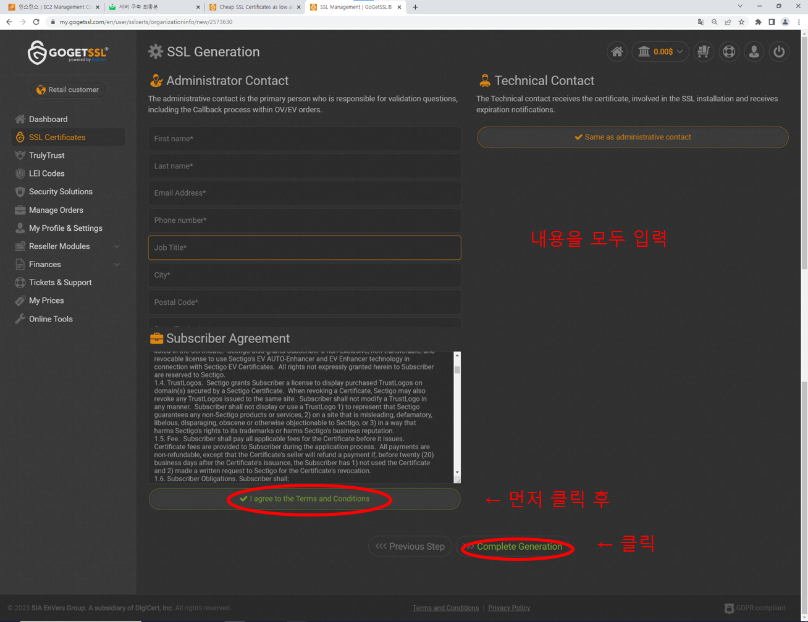
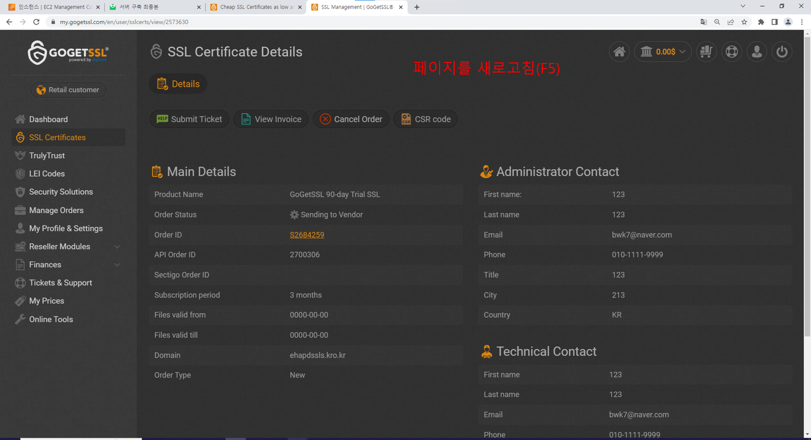
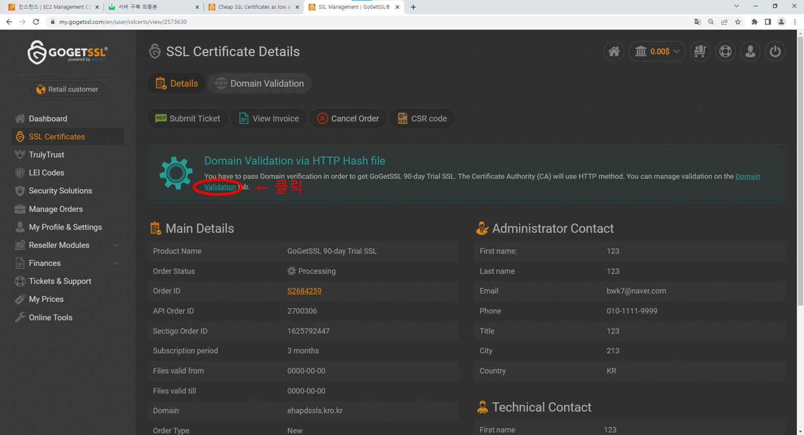
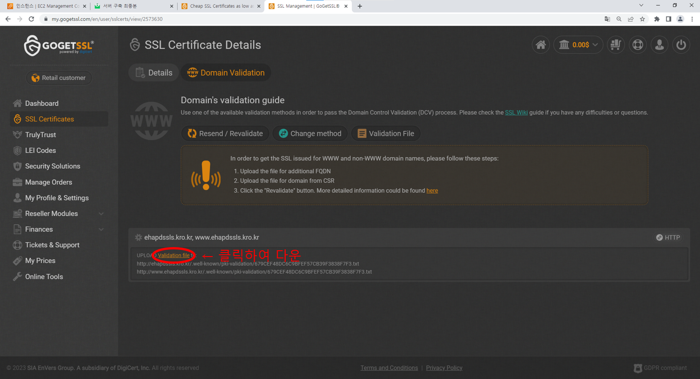
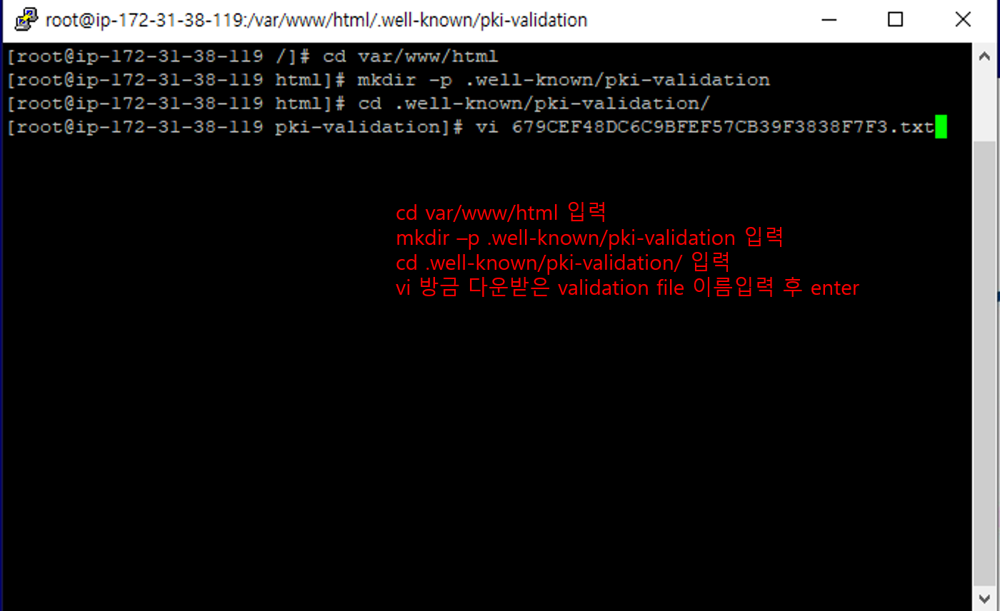
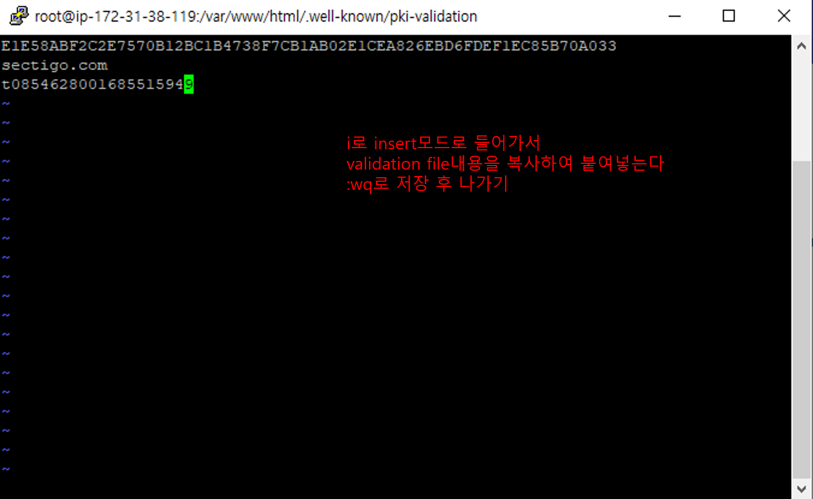
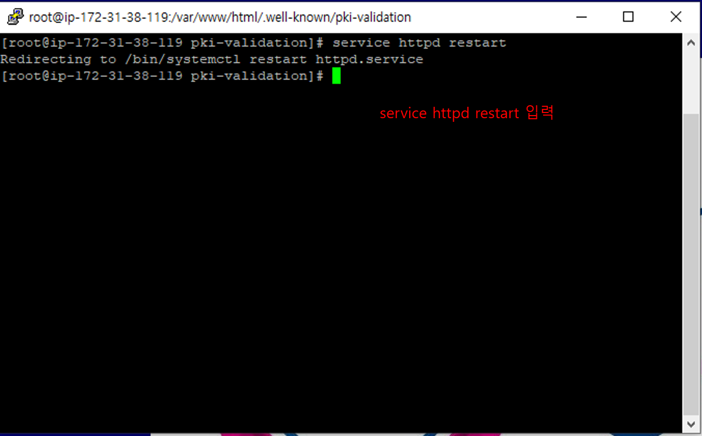
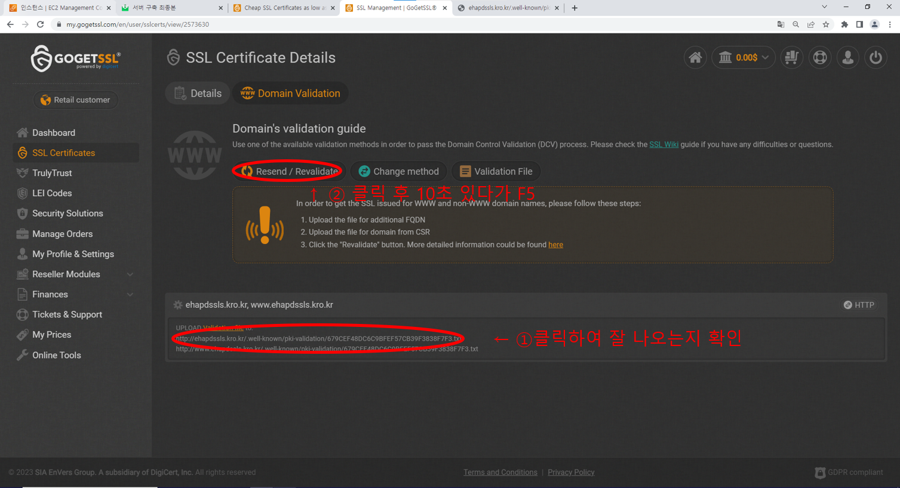
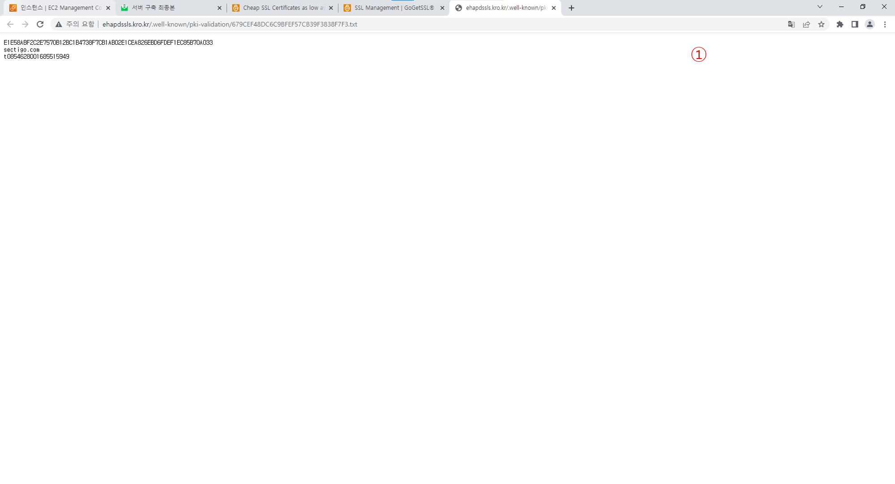

email 인증은 도메인 등록정보 에서 확인되는 이메일에 인증을 보내는 방식으로 까다로워서 추천하지 않습니다.
dns 인증은 해당 인증기관에 dns레코드가 있는데 레코드를 서버에 적용하는 방식으로 이것도 까다롭습니다.
http 인증은 인증기관에서 주는 보안코드가 담긴 txt 파일을 서버에 업로드 해서 인증기관에 인증하는 방식으로 이걸 추천합니다.
https 인증은 보안이 더 추가적으로 강화되지만 일반적인 사용자들이 사용하기 까다로워서 추천하지 않습니다.









이 화면이 뜨지않을 시 잘못된 경로에 파일을 만들었거나 오타가 발생하여 인증이 안되는 경우가 많습니다.